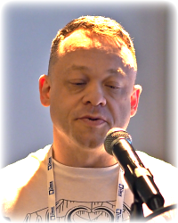

Improving the merging of anonymous VMAs
Each VMA structure occupies non-movable kernel memory and increases the amount of memory-management overhead, so there is value in keeping them to a minimum. So, for example, if a process calls mmap() to allocate a range of memory, the kernel will check whether the new range adjoins an existing range with a compatible VMA; if so, the kernel will extend the existing VMA to cover the new address range rather than allocating a new VMA. There are also scenarios, as we will see, where the kernel can merge existing VMAs to reduce the overall number.
Some background
Before getting into Stoakes's topic, though, there are a couple of other bits of context that will, hopefully, make the discussion more understandable. Specifically, the topic at hand deals heavily with the anon_vma and anon_vma_chain structures.

At least, that is how it worked initially. The existence of copy-on-write memory complicates life, in that the same VMA in parent and child processes can refer to a combination of folios, some of which are shared and some of which have been written to, and thus copied. Trying to track all of this with a single anon_vma structure became unwieldy and scaled poorly so, in 2010, Rik van Riel created the anon_vma_chain which, as its name would suggest, tracks a list of anon_vma structures, each of which may point to VMAs that map any given folio.
It is worth mentioning that any given anonymous VMA may not, on creation, have an associated anon_vma structure. The anon_vma is only created when the memory is faulted into that VMA. In the discussion below, a "faulted" VMA is one where this has happened — at least one folio has been faulted into the address space, and an anon_vma structure exists. An "unfaulted" VMA has no anon_vma structure.
Finally, there are two relevant structure fields that are needed to know just where any given folio falls within its VMA. The folio itself has a field called index, which gives that folio's location within the VMA. That index, though, is adjusted by the pgoff field stored in the VMA itself; pgoff can be thought of as the origin for the index field; that origin might be outside of the VMA itself. Subtracting pgoff from index will give the true offset of the folio from the beginning of the VMA.
Anonymous-VMA merging
Stoakes started with one of the core rules that applies when the kernel is considering merging two adjacent VMAs. Beyond the usual checks (are the VMAs of the same type, with the same permissions?), the kernel checks the anon_vma pointers. If both of the VMAs being considered for merging are faulted (thus having non-null anon_vma pointers), the two pointers must be the same. If one of the anon_vma pointers is null, then the merge can still happen, as long as the pgoff field of the upper VMA (the one at the higher virtual address) is equal to the sum of the pgoff and length of the lower VMA.
Things get trickier, though, in the presence of the mremap() system call. This call can move a VMA within the address space, that can cause pgoff to fail to line up as described above, preventing a VMA merge that could otherwise take place. In the absence of an anon_vma pointer, a VMA's pgoff can simply be changed, but that will not work if the VMA is faulted. In that case, the index field of the faulted-in folios indicate where that folio fits within the VMA; it is relative to pgoff, so changing pgoff would corrupt the address space. The end result is that merging can almost never happen when mremap() is used to move a faulted VMA.
Matthew Wilcox asked how common this type of moving is; once upon a time, mremap() did not even allow it. But it is allowed now; David Hildenbrand pointed out that this kind of movement can be used in attempts to defragment memory in user space.
Beyond better efficiency, Stoakes continued, there are other reasons to improve this situation. An mremap() call cannot cross a VMA boundary, so unmerged VMAs can prevent operations that would otherwise be allowed. In the worst case, he said, this failure to merge could be seen as breaking the kernel's user-space ABI.
Stoakes was there to present a "crazy idea
" that he hoped could
address this problem; it has been implemented in this patch
set posted just before the conference. It adds a new flag to
mremap() called MREMAP_RELOCATE_ANON; if this flag is
present, mremap() will walk the page tables to update the VMA and
folio offsets, with the intent that the moved VMA could then be merged into
another one adjacent to its new location. It would be a best-effort
attempt, which could fail if the needed resources are not available.
User space could use this flag when it hopes that merging can happen, and
when it is willing to pay the cost of the page-table walk. He pointed out
that, sometimes, user space will move several VMAs around with multiple
mremap() calls. Often, in this case, only the last call would
need the new flag and have to pay that extra cost. This feature would be
especially appreciated, he said, for "a coffee-oriented language
"
that does these kinds of moves.
Hildenbrand expressed concern that this patch series adds a lot of complexity for a single, specific use case. He suggested that perhaps an madvise() operation could be provided instead as a way of separating this complexity from mremap(). Wilcox, instead, suggested simply deferring all of this work until the kernel sees an mremap() call that crosses a VMA boundary; at that point, the kernel could try adjusting the mappings before failing the call altogether. There would be an additional advantage that the call would make it clear which VMAs need to be merged at that time.
The first implementation, Stoakes said, is cautious and does not attempt to handle cases with longer anon_vma_chain lists. It relocates the VMA pgoff and the associated folio index fields regardless of whether it is able to merge the VMAs or not. Transparent huge pages are correctly handled (and improve performance overall) — but this series needs a lot of testing, he said. Overall, the performance overhead is small, especially when huge pages are in use, so perhaps this remapping could be done opportunistically even when user space does not request it.
Hildenbrand asked whether there might be a way to avoid walking the page tables and adjusting the index in every folio found there. Van Riel said that the problem comes about when a folio is mapped into both a parent and a child process, and the child remaps it. At that point, the folio exists at two different addresses in the two processes, but it only has one index. Thus, both the pgoff and index fields are needed to properly place a folio within a VMA.
Vlastimil Babka said that he was advising a student some years ago who was trying to implement a similar solution; that work got as far as an initial patch posting. But the workload it was improving was proprietary, and nobody was able to find an equivalent open-source workload. There is little desire to merge kernel features just to serve proprietary workloads; among other things, that use could end in a few years and nobody would know that the feature is no longer needed. He asked whether Stoakes's use case was more open; Stoakes admitted that there may be a similar problem this time around.
Kalesh Singh said that he might have a suitable use case. The Android
system uses userfaultfd()
to manage app address spaces, and it goes out of its way to try to enable
merging of VMAs when possible. That is non-proprietary code, and could
make a good test case for this new feature. Michal Hocko agreed, and
suggested that, given the time, this would be a good place to end this
session.
| Index entries for this article | |
|---|---|
| Kernel | Memory management/Object-based reverse mapping |
| Conference | Storage, Filesystem, Memory-Management and BPF Summit/2025 |
Posted Apr 1, 2025 13:05 UTC (Tue)
by vbabka (subscriber, #91706)
[Link] (2 responses)
As I said in the session, I'd hope this "child remapping" situation is so rare, we could just COW-unshare the folios in that case and it wouldn't cause a significant increase in memory usage.
Posted May 7, 2025 13:32 UTC (Wed)
by hyeyoo (subscriber, #151417)
[Link] (1 responses)
Posted May 8, 2025 0:38 UTC (Thu)
by hyeyoo (subscriber, #151417)
[Link]
remapping in child process
remapping in child process
remapping in child process